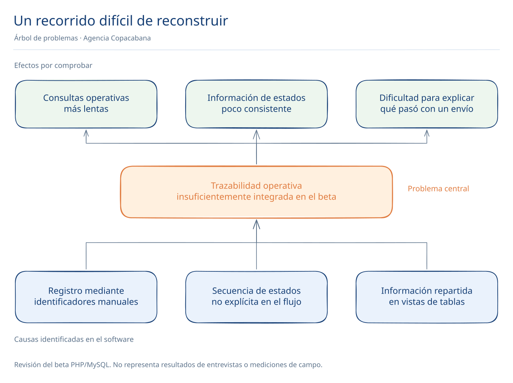
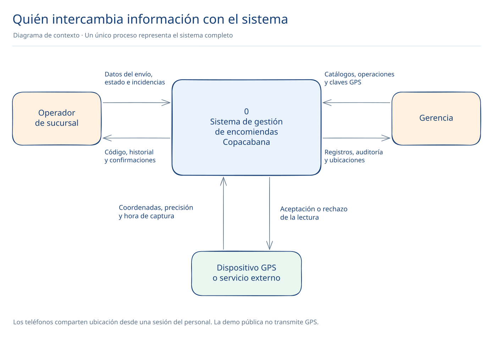
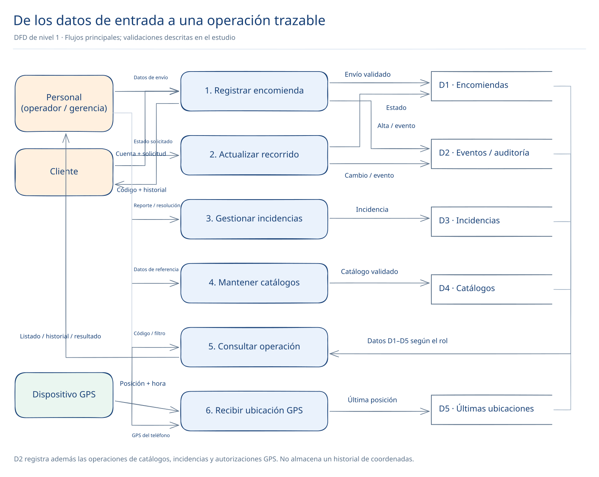
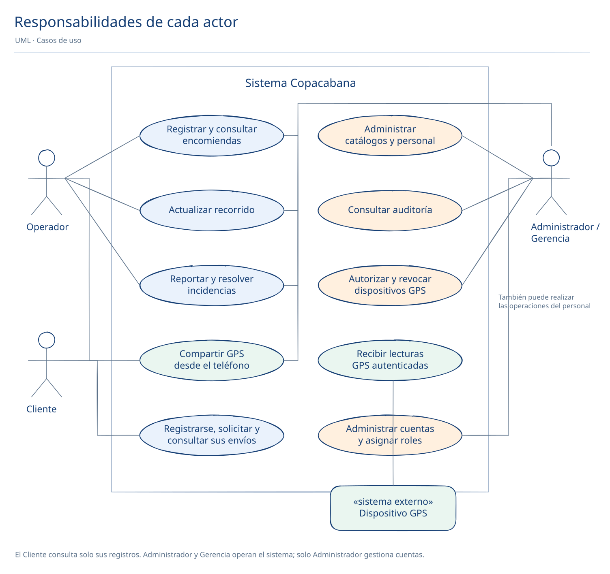
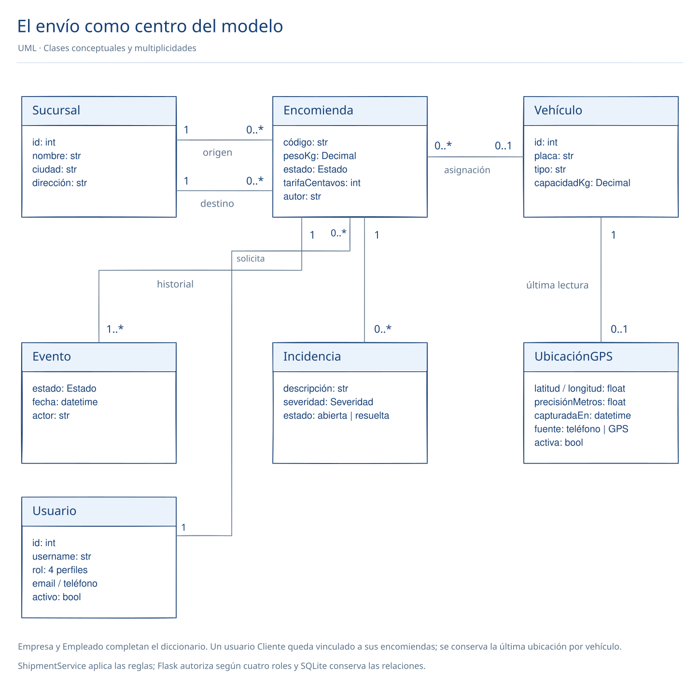
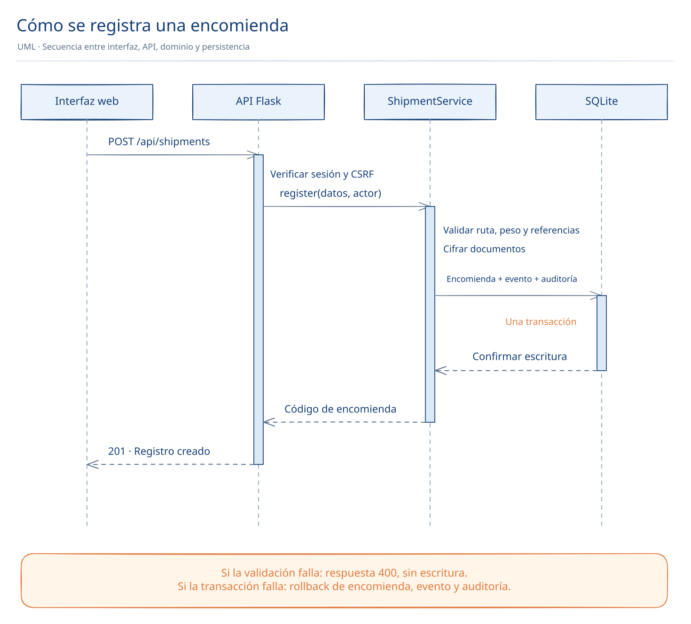
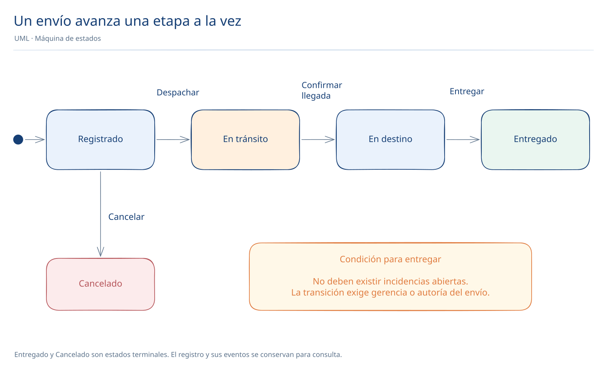

Sistema de gestión y trazabilidad de encomiendas para la agencia Copacabana
Estado del documento. Propuesta académica elaborada a partir del beta proporcionado y de la guía «PROYECTO ADOO-2026-sem2». Las entrevistas, observaciones de campo y mediciones de impacto son actividades propuestas; no se presentan como realizadas. Integrantes, docente y paralelo de esta entrega: pendientes de completar por el equipo.
I. Generalidades y marco teórico
1. Introducción
El traslado de una encomienda requiere coordinar su recepción, despacho, llegada y entrega. Cuando varias sucursales participan, es necesario conservar una identificación común del envío y un historial que permita comprender qué ocurrió, cuándo ocurrió y quién registró la operación.
Este proyecto propone una aplicación web para una agencia boliviana con presencia en La Paz, Cochabamba, Santa Cruz, Oruro y Tarija. Se utiliza el análisis estructurado para describir los flujos de información y el diseño orientado a objetos para especificar responsabilidades y comportamiento. Una implementación en Python, HTML, CSS y JavaScript permite contrastar los modelos con flujos ejecutables.
2. Antecedentes
El antecedente entregado contiene cinco archivos PHP, un script MySQL y un informe de Seguridad de Bases de Datos SEG-253. El beta permite registrar encomiendas, actualizar estados, consultar entidades y revisar auditoría. El informe describe roles de gerencia y operación, protección de documentos y una propuesta de conexión entre sucursales.
La revisión del código identifica formularios que solicitan identificadores numéricos de sucursales, cambios de estado sin una secuencia explícita en la interfaz y eliminaciones mediante enlaces. La versión propuesta sustituye esos mecanismos por selectores descriptivos, transiciones verificadas en el servidor y operaciones de escritura autenticadas. La comparación proviene del código suministrado; no implica que se haya observado una operación real de la empresa.
3. Planteamiento del problema
El beta concentra datos operativos, pero no presenta un recorrido integrado que permita consultar y controlar cada etapa de una encomienda. La necesidad de conocer identificadores internos y la falta de una secuencia explícita de estados pueden dificultar el registro y la verificación de entregas. Debe investigarse con usuarios si estas limitaciones producen errores y cuánto tiempo requieren las consultas.


4. Formulación del problema
¿Cómo diseñar e implementar un sistema web que integre el registro, seguimiento e incidencias de encomiendas, mantenga reglas consistentes entre sucursales y permita identificar al responsable de cada operación?
5. Objetivo general
Desarrollar y documentar un sistema web de gestión de encomiendas, aplicando análisis estructurado y diseño orientado a objetos, que permita registrar envíos, controlar su recorrido y consultar su trazabilidad.
6. Objetivos específicos
- Identificar los actores, datos y restricciones a partir del beta y validar los requisitos con usuarios de referencia.
- Modelar el contexto, los flujos de datos y las relaciones entre las entidades del negocio.
- Definir casos de uso, clases, estados y secuencias con UML.
- Implementar una interfaz adaptable y un backend Python con persistencia, validaciones, roles y auditoría.
- Verificar los flujos principales y publicar los avances en un sitio accesible mediante URL.
7. Método, medios e instrumentos
Se propone un estudio aplicado de alcance descriptivo, basado inicialmente en revisión documental y análisis del software entregado. El desarrollo seguirá iteraciones incrementales: requisitos, modelos, implementación, comprobación y publicación. Cada requisito tendrá una referencia a un caso de uso y a una comprobación.
| Instrumento | Información buscada | Estado |
|---|---|---|
| Ficha de revisión documental | Funciones, estructura y reglas del beta; guía de entrega | Aplicada al material suministrado |
| Entrevista semiestructurada | Responsabilidades, errores frecuentes, reglas de entrega | Propuesta; pendiente de realizar |
| Guía de observación | Pasos y tiempos de recepción, despacho y entrega | Propuesta; pendiente de autorización y ejecución |
| Prueba de tareas | Éxito al registrar, localizar y entregar una encomienda | Guion preparado; usuarios reales pendientes |
Preguntas de entrevista: ¿qué información se solicita al recibir un paquete?, ¿quién autoriza un despacho?, ¿cómo se verifica la recepción en destino?, ¿qué impide una entrega?, ¿qué errores se corrigen con más frecuencia?, ¿qué información debe ver cada rol?
Ficha de observación propuesta: fecha, sucursal, rol observado, tarea, tiempo de inicio y fin, pasos realizados, errores, ayuda requerida y observaciones. Registrar información anonimizada y no copiar documentos personales.
8. Justificación y marco teórico
Una identificación única y un historial de eventos permiten relacionar las etapas de un envío. El análisis estructurado describe la transformación de entradas en salidas mediante procesos y almacenes de datos. El diseño orientado a objetos distribuye responsabilidades entre elementos del dominio y servicios. Ambas perspectivas se utilizan para revisar la coherencia del sistema.
UML proporciona una notación para especificar estructura y comportamiento; se emplean casos de uso, clases, secuencias y estados según el marco de OMG UML 2.5.1. Una transacción agrupa operaciones que deben confirmarse juntas; las claves foráneas mantienen referencias válidas entre registros. La autorización por rol delimita operaciones de gerencia y de personal operativo.
La propuesta busca facilitar la comprensión del flujo de trabajo, reducir entradas inconsistentes y proporcionar evidencia de cambios. Estos beneficios son objetivos de diseño; sus efectos cuantitativos deberán medirse durante la validación con usuarios.
9. Planificación por incrementos
Calendario propuesto desde el 20 de octubre hasta el 8 de diciembre de 2026. Las responsabilidades se asignan por función mientras se confirma el equipo de 4 a 6 integrantes exigido en la guía.
Dependencias: los requisitos preceden a la validación de modelos; los modelos orientan los cambios de implementación; la prueba de usuarios requiere una versión estable. El sitio y contenido inicial deben publicarse entre el 27 y el 29 de octubre. La URL final, entrega impresa y defensa corresponden al 8 de diciembre de 2026, según la guía.
| Función del equipo | Entregable | Criterio de cierre |
|---|---|---|
| Investigación y análisis | Problema, requisitos e instrumentos | Supuestos identificados y requisitos revisados |
| Modelado | DFD, datos y UML | Consistencia entre procesos, entidades y casos de uso |
| Implementación | Interfaz y backend | Flujos ejecutables y controles de acceso |
| Pruebas y documentación | Evidencias, informe y publicación | Resultados reproducibles y enlaces accesibles |
II. Análisis y diseño estructurado
10. Actores y límites
La aplicación distingue cuatro roles. El Cliente puede registrarse, solicitar encomiendas y consultar solo sus propios envíos; el Operador registra y actualiza envíos que tiene asignados; Gerencia administra catálogos y operaciones; el Administrador gestiona cuentas y roles, además de contar con permisos de Gerencia. El selector de Pages representa estos perfiles de demostración y no autentica usuarios reales.


11. Descomposición de procesos
| Proceso | Entrada | Transformación | Salida / almacén |
|---|---|---|---|
| 1. Registrar encomienda | Personas, contenido, peso, ruta y asignaciones | Validar, generar código, calcular tarifa de ejemplo, cifrar documentos | Envío registrado; D1 Encomiendas y D2 Eventos / auditoría |
| 2. Gestionar recorrido | Código y nuevo estado | Comprobar permisos, secuencia e incidencias | Estado actualizado; D1 y D2 |
| 3. Gestionar incidencia | Código, descripción y severidad | Registrar o resolver novedad | D3 Incidencias |
| 4. Administrar catálogos | Sucursales, empresas, flota y personal | Validar unicidad, referencias y rol | D4 Catálogos |
| 5. Consultar y auditar | Filtro o código | Recuperar registros autorizados | Listado, recorrido, auditoría o mapa desde D1–D5 |
| 6. Recibir ubicación GPS | Coordenadas, precisión y fecha; sesión o clave de dispositivo | Autorizar vehículo, validar lectura y conservar la más reciente | D5 Últimas ubicaciones |


12. Requisitos funcionales
| ID | Requisito | Regla de aceptación |
|---|---|---|
| RF01 | Registrar Clientes y autenticar usuarios | El registro público siempre crea Cliente; el backend exige sesión y toma el rol de la base de datos. |
| RF02 | Registrar encomiendas | Origen distinto de destino, peso positivo, personas y contenido completos. |
| RF03 | Controlar el recorrido | Registro → tránsito → destino → entrega; cancelación solo desde registro. |
| RF04 | Consultar y buscar | Listado por código, descripción o persona; filtro por estado; historial por código. |
| RF05 | Gestionar incidencias | Una incidencia abierta impide la entrega; resolver conserva el registro. |
| RF06 | Administrar catálogos | Solo gerencia puede crear, modificar o eliminar referencias no utilizadas. |
| RF07 | Auditar operaciones | Se registra actor, operación, objeto y fecha; consulta exclusiva de gerencia. |
| RF08 | Exportar el listado | Archivo CSV con los resultados filtrados, sin documentos personales. |
| RF09 | Consultar mapa y recibir GPS | Teléfono con permiso o dispositivo con clave; última ubicación por vehículo; estado de señal y revocación. |
| RF10 | Administrar cuentas y roles | El registro público crea solo Clientes; Administrador crea cuentas, asigna roles y activa o desactiva usuarios sin eliminar el último Administrador activo. |
Permisos por rol
| Rol | Permisos principales | Límite |
|---|---|---|
| Cliente | Registro público, solicitud y consulta de encomiendas propias. | No modifica estados, incidencias, GPS ni catálogos. |
| Operador | Registro, recorrido e incidencias en sus envíos asignados. | No administra catálogos, salarios, auditoría ni cuentas. |
| Gerencia | Opera todos los envíos, catálogos, auditoría, GPS y dispositivos. | No administra cuentas ni modifica roles. |
| Administrador | Incluye permisos de Gerencia y gestión de usuarios, roles y accesos. | El servidor conserva al menos un Administrador activo y protege la sesión propia. |
13. Requisitos no funcionales
- Integridad: claves foráneas y transacciones para mantener consistencia de envíos, eventos y auditoría.
- Seguridad: contraseñas con hash, autorización en servidor, protección CSRF, cifrado de documentos y sesiones con cookies HttpOnly. HTTPS es obligatorio al desplegar el backend en Internet.
- Usabilidad: diseño adaptable, navegación por teclado, etiquetas visibles y mensajes de validación.
- Mantenibilidad: reglas de envíos agrupadas en
ShipmentService, esquema versionado y pruebas automatizadas. - Rendimiento: objetivo propuesto de respuesta menor de dos segundos en tareas habituales, por medir en un entorno representativo. La versión inicial carga el registro completo y no se presenta como validada para grandes volúmenes.
14. Diccionario de datos y relaciones
| Entidad | Identificación y atributos principales | Relaciones / restricciones |
|---|---|---|
| Usuario | id, username, password_hash, role, email, display_name, phone, is_active | Nombre de usuario y correo únicos cuando se proporcionan; rol administrador, gerente, operador o cliente; las contraseñas se guardan como hashes. |
| Sucursal | id, name, city, address | Una sucursal origina o recibe muchos envíos. |
| Empresa | id, name, nit, phone | NIT único; referencia opcional de un envío. |
| Vehículo | id, plate, type, capacity | Placa única; capacidad positiva. |
| Empleado | id, name, position, branch_id, salary_cents | Una sucursal por empleado; salario en centavos, visible a gerencia. |
| Encomienda | id, origin, destination, sender, recipient, documentos cifrados, description, weight, price_cents, status, created_by, created_at, client_user_id | Código único; origen ≠ destino; peso de 0,01 a 10.000 kg; client_user_id vincula solicitudes de Cliente a su cuenta. |
| Evento | id, shipment_id, status, created_at, actor | Un envío tiene uno o más eventos; orden por identificador. |
| Incidencia | id, shipment_id, description, severity, status, created_by, created_at | Un envío puede tener varias incidencias; abierta o resuelta. |
| Auditoría | id, actor, action, target, details, created_at | Sin edición ni eliminación mediante API; protección adicional con triggers. |
| DispositivoGPS | id, vehicle_id, name, token_hash, created_at, revoked | Clave vinculada a un vehículo; nunca se almacena en texto legible; revocable. |
| UbicaciónGPS | vehicle_id, latitude, longitude, accuracy, captured_at, received_at, source, source_id, source_label, active | Una última lectura por vehículo; fecha UTC, coordenadas válidas y antigüedad visible. |
El modelo separa catálogos y hechos operativos. Los importes se expresan en centavos enteros para evitar acumulación de errores binarios. Las fechas se almacenan en UTC y se muestran en la zona de Bolivia. created_by y actor conservan el nombre del responsable como evidencia del evento, sin enlazarlo a un catálogo editable de empleados.
15. Especificación de procesos
REGISTRAR ENCOMIENDA
verificar sesión y token CSRF
comprobar campos, sucursales, peso y capacidad individual
generar código único y calcular tarifa académica
cifrar documentos
EN UNA TRANSACCIÓN:
insertar encomienda en estado Registrado
insertar evento inicial
insertar auditoría
devolver código
CONFIRMAR ENTREGA
verificar rol o autoría del envío
bloquear escritura y leer el estado vigente
exigir estado En destino
exigir ausencia de incidencias abiertas
EN LA MISMA TRANSACCIÓN:
actualizar estado, insertar evento e insertar auditoría
III. Análisis y diseño orientado a objetos
16. Casos de uso


| Caso | Precondición | Flujo principal | Alternativas / resultado |
|---|---|---|---|
| CU01 Registrar envío | Personal autenticado | Seleccionar ruta, indicar contenido y personas, revisar tarifa, registrar. | Datos inválidos: corregir sin guardar. Éxito: código e historial inicial. |
| CU02 Actualizar estado | Personal autenticado; envío abierto | Abrir detalle, elegir transición disponible, confirmar. | El Operador solo cambia sus envíos; Gerencia y Administrador pueden operar todos; Cliente y cambios inválidos se rechazan. |
| CU03 Consultar recorrido | Personal autenticado o Cliente titular | Ingresar código y consultar las etapas e historial autorizados. | Código de otro Cliente o inexistente: no se expone el registro. |
| CU04 Gestionar incidencia | Personal autorizado; envío abierto | Seleccionar envío, describir novedad y severidad; resolver cuando corresponda. | Cliente o usuario sin permiso: rechazar. Resolución: conservar reporte y auditar. |
| CU05 Mantener catálogos | Gerencia o Administrador autenticado | Crear o editar datos; solicitar eliminación cuando no existan dependencias. | Referencia utilizada o dato duplicado: impedir eliminación o escritura. |
| CU06 Consultar auditoría | Gerencia o Administrador autenticado | Visualizar actor, fecha, operación y detalle. | Operador y Cliente: acceso denegado. |
| CU07 Administrar usuarios | Administrador autenticado | Crear cuentas, asignar rol y habilitar o deshabilitar acceso. | El registro público solo crea Clientes; el último Administrador activo no se puede desactivar ni degradar. |
| CU08 Solicitar encomienda | Cliente autenticado | Indicar sucursales, destinatario, contenido y peso; enviar la solicitud. | La cuenta queda vinculada al registro; asignación y recorrido quedan al personal. |
17. Modelo de clases del dominio


Diseño implementado: ShipmentService recibe una conexión SQLite y un cifrador, y expone register() y transition(). Store, en JavaScript, agrupa el acceso a los datos de la interfaz. El modelo conceptual anterior describe el negocio; la implementación utiliza registros relacionales sin agregar una capa ORM.
18. Secuencia: registrar una encomienda


19. Estados de una encomienda


20. Arquitectura y decisiones
| Capa | Tecnología | Responsabilidad |
|---|---|---|
| Presentación | HTML5, CSS3, módulos JavaScript | Portada, estudio y panel adaptable, formularios y mensajes. |
| Aplicación | Python + Flask | Sesiones, API, autorización y reglas de negocio. |
| Persistencia | SQLite | Catálogos, usuarios, envíos, eventos, incidencias y auditoría. |
| Protección de documentos | Fernet | Cifrado autenticado con clave privada fuera del repositorio. |
| Publicación académica | GitHub Pages | Sitio estático y demostración con almacenamiento local. |
GitHub Pages publica contenido estático y no ejecuta Python. Por eso la publicación utiliza una demostración identificada, mientras que Flask sirve la misma interfaz con una API del mismo origen. El backend se ejecuta localmente o en un servidor WSGI, con almacenamiento persistente. No existe una sincronización automática entre la demo de Pages y SQLite.
Se elige SQLite para una entrega reproducible con pocas dependencias. La arquitectura distribuida FEDERATED y la VPN descritas en el antecedente no se migran: requieren otra infraestructura y validación. La nueva auditoría comparte la base de datos de la aplicación; sus triggers evitan modificaciones ordinarias, pero no la hacen inalterable frente a un administrador del archivo.
Los documentos personales se cifran con una clave generada al inicializar la aplicación. La clave debe respaldarse por separado de la base de datos. No se reutilizan ni publican las credenciales y claves incluidas en el beta. La demo no conserva números de documento y no constituye un mecanismo de autenticación.
Mapa operativo y recepción de GPS
El mapa usa Leaflet y cartografía de OpenStreetMap. Las sucursales se representan en el centro de sus ciudades como referencia; deben georreferenciarse sus direcciones reales antes del uso comercial. Al seleccionar una encomienda se unen origen y destino con una línea de referencia, no con un itinerario por carretera.
En Python, los envíos y últimas posiciones se consultan cada 10 segundos. Una lectura activa de hasta dos minutos se marca como reciente; las demás permanecen identificadas como última ubicación conocida. No se generan posiciones ficticias. GitHub Pages permite seleccionar un vehículo y capturar GPS desde un teléfono con permiso; la última lectura queda solo en ese navegador. Compartirla con otros equipos y recibir ubicaciones GPS remotas requiere el backend Python servido por HTTPS.
- Teléfono: iniciar sesión, abrir Mapa y GPS, seleccionar vehículo y pulsar Compartir ubicación. El navegador pide permiso. Mantener la página abierta; Detener apaga el seguimiento. El operador solo puede transmitir para vehículos de sus envíos abiertos.
- Pages: la demo habilita la geolocalización del navegador tras seleccionar vehículo y aceptar el permiso; conserva la lectura solo en ese navegador.
- Dispositivo: Administrador o Gerencia crea una clave vinculada a un vehículo en Gestionar dispositivos. Solo se muestra una vez, se almacena su hash y puede revocarse.
El dispositivo o adaptador envía POST /api/gps/positions con Authorization: Bearer CLAVE y JSON con latitude, longitude, accuracy en metros y captured_at en ISO 8601 con zona horaria. El servidor rechaza claves revocadas, coordenadas inválidas y horas fuera de rango; una lectura antigua no reemplaza una más reciente. Se conserva únicamente la última posición por vehículo, que gerencia puede borrar.
La entrada HTTP está implementada. La conexión física de un GPS o un proveedor con protocolo propio requiere su modelo, documentación y un adaptador; no se afirma que exista un dispositivo conectado ni se ofrece seguimiento cuando el teléfono está cerrado o suspendido.
21. Matriz de trazabilidad y validación
| Requisito | Caso de uso / componente | Comprobación prevista |
|---|---|---|
| RF01 | Acceso / sesión Flask | Registro Cliente, rechazo sin sesión, credenciales incorrectas, CSRF y cierre de sesión. |
| RF02 | CU01 y CU08 / ShipmentService.register | Alta de personal y solicitud Cliente, origen igual a destino, peso inválido, documentos cifrados y capacidad. |
| RF03 | CU02 / ShipmentService.transition | Recorrido completo, rechazo de saltos, autoría y cancelación. |
| RF04 | CU03 / panel web | Búsqueda, filtros, seguimiento propio y código ajeno o inexistente. |
| RF05 | CU04 / incidencias | Crear, bloquear entrega, resolver y entregar. |
| RF06 | CU05 / catálogos | Acceso de Gerencia/Admin, restricción de Cliente/Operador y referencias utilizadas. |
| RF07 | CU06 / auditoría | Actor y operación registrados; ausencia de cambios sin autorización. |
| RF08 | Exportación CSV | Descarga de resultados y neutralización de fórmulas de hoja de cálculo. |
| RF09 | Mapa / módulo GPS | Permisos, coordenadas y fechas, orden de lecturas, teléfono, claves por vehículo y revocación. |
| RF10 | CU07 / gestión de cuentas | Registro Cliente, aislamiento de envíos, cambios de rol y protección del último Administrador. |
El repositorio incluye pruebas automatizadas del backend y de reglas JavaScript, y un guion de prueba del navegador. Los resultados ejecutados se registran en el archivo VALIDACION.md del repositorio. No se presentan como pruebas con usuarios finales ni como evaluación de carga.
22. Guion de evaluación con usuarios
- Registrar un paquete de 2,5 kg entre La Paz y Cochabamba usando personas ficticias.
- Localizar el registro mediante su código y explicar su estado actual.
- Despachar y confirmar la llegada; reportar una incidencia.
- Intentar entregar, resolver la incidencia y completar la entrega.
- Consultar el historial y explicar quién realizó cada cambio.
Recoger éxito de tarea, duración, errores, necesidad de ayuda y comentarios. Comparar el mismo conjunto de tareas con el beta cuando exista un entorno seguro y reproducible. Criterios propuestos: todas las tareas críticas completables, ningún cambio de estado indebido aceptado y ninguna operación de gerencia permitida a un operador.
23. Alcance, riesgos y trabajo pendiente
- Incluye registro público de Clientes, consulta de sus propios envíos, operación, incidencias, catálogos, cuatro roles, gestión de cuentas, auditoría, exportación y captura GPS autorizada.
- La tarifa es una fórmula académica fija de Bs 15 + Bs 4 por kg. No representa una tarifa comercial validada ni emite factura fiscal.
- La asignación de vehículo valida el peso individual del paquete; no planifica viajes ni acumula la carga total de una salida.
- No incluye cobros, mensajería, firmas de recepción, aplicación móvil nativa ni conexión entre bases federadas.
- La migración conserva los conceptos y funciones centrales; no importa automáticamente registros reales de MySQL ni replica su sistema de privilegios.
- La demo de Pages almacena perfiles, datos y lecturas GPS en el navegador. Un backend multiusuario público necesita hosting adicional, HTTPS, configuración de cookies seguras, copias de seguridad, supervisión y pruebas de carga.
- Faltan la confirmación de integrantes y docente, entrevistas, evidencia de campo y mediciones de impacto. No se inventaron resultados ni datos de investigación.
24. Publicación e impresión
El sitio agrupa la propuesta, el estudio y el sistema. Las futuras iteraciones deben actualizar la documentación y registrar sus cambios en Git. La hoja de impresión utiliza tamaño carta, Times New Roman 12 pt, interlineado 1,5 y márgenes superior e izquierdo de 4 cm, derecho e inferior de 2,5 cm. Antes de la entrega impresa, revisar la paginación y configurar la numeración correlativa en el pie derecho; el resultado depende de las opciones de impresión del navegador.
25. Referencias y procedencia
- Guía suministrada por el usuario. PROYECTO ADOO-2026-sem2.pdf, una página. Requisitos de estructura y fechas de entrega.
- Beta suministrado. proyectoEncomiendas: código PHP, ScriptSQL.sql e informe EncomiendasProyecto-SEG-253.pdf. Referencia funcional; sus credenciales no se incorporan a esta publicación.
- Object Management Group. Unified Modeling Language, versión 2.5.1.
- Pallets. Flask: Security Considerations y Deploying to Production.
- SQLite. Foreign Key Support y Transactions.
- Python Cryptographic Authority. Fernet: cifrado simétrico autenticado.
- GitHub. Creating a GitHub Pages site.
Los modelos son elaboración de esta propuesta a partir de las funciones observadas en el beta. Los datos visibles en la demostración son ficticios. Este documento es una base de trabajo revisable para el equipo, no evidencia de una investigación de campo terminada.